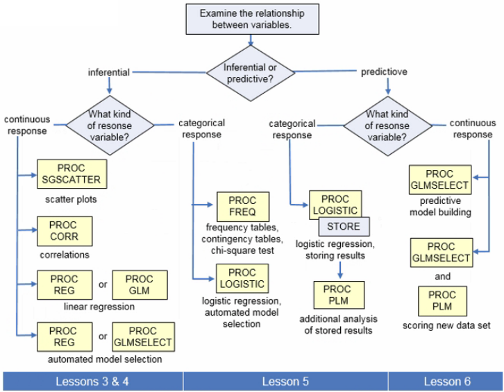
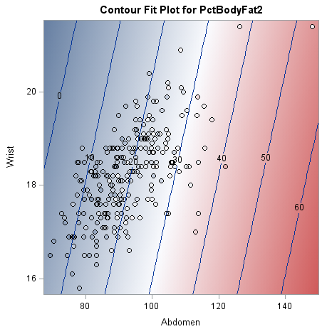
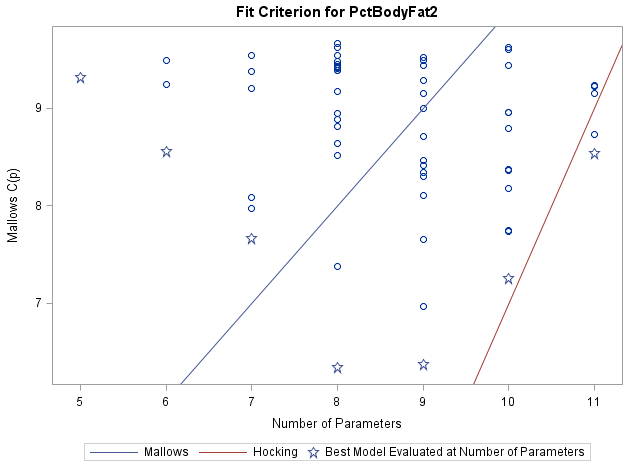

Regression

Exploratory Data AnalysisLink
A useful set of techniques for investigating your data is known as exploratory data analysis.
PROC SGCATTER: Scatter PlotsLink
1 2 3 | |
- If you have so many observations that the scatter plot of the whole data set is difficult to interpret, you might run
PROC SGSCATTERon a random sample of observations
PROC CORR: Correlation AnalysisLink
There are two ways of calculating correlations: the Pearson correlation coefficient (specially used for normal distributed data) and the Spearman's rank correlation coefficient (which is best fitted when your data presents outliers).
The Spearman correlation between two variables is equal to the Pearson correlation between the rank values of those two variables; while Pearson's correlation assesses linear relationships, Spearman's correlation assesses monotonic relationships (whether linear or not). Spearman's coefficient is appropriate for both continuous and discrete ordinal variables.
The closer the Pearson correlation coefficient is to +1/-1, the stronger the positive/negative linear relationship is between the two variables. The closer the correlation coefficient is to 0, the weaker the linear relationship and if it is 0 variables are uncorrelated.
- When you interpret the correlation, be cautious about the effect of large sample sizes: even a correlation of 0.01 can be statistically significant with a large enough sample size and you would almost always reject the hypothesis $H_0$: $\rho =0$, even if the value of your correlation is small for all practical purposes
- Some common errors on interpreting correlations are concluding a cause-and-effect relationship between the variables misinterpreting the kind of relationship between the variables and failing to recognize the influence of outliers on the correlation
- The variables might be related but not causally
- Correlation coefficients can be large because both variables are affected by other variables
- Variables might be strongly correlated by chance
- Just because the correlation coefficient is close to 0 doesn't mean that no relationship exists between the two variables: they might have a non-linear relationship
- Another common error is failing to recognize the influence of outliers on the correlation
- If you have an outlier you should report both correlation coefficients (with and without the outlier) to report how influential the unusual data point is in your analysis
The PROC CORR also produces scatter plots or a scatter plot matrix.
1 2 3 4 5 | |
Simple Linear RegressionLink
You use correlation analysis to determine the strength of the linear relationship between continuous response variables. Now you need to go a step further and define the linear relationship itself: $Y= \beta_0+\beta_1 \cdot X+\epsilon$
- $Y$ is the response variable
- $X$ is the predictor variable
- $\beta_0$ is the intercept parameter
- $\beta_1$ is the slope parameter
- $\epsilon$ is the error term
The method of least squares produces parameter estimates $\hat \beta_0$ and $\hat \beta_1$ with certain optimum properties which make them the Best Linear Unbiased Estimators (BLUE):
- They are unbiased estimates of the population parameters
- They have minimum variance
To find out how much better is the model that takes the predictor variable into account than a model that ignores the predictor variable, you can compare the simple linear regression model to a baseline model ($Y= \bar Y$ independent of $X$). For your comparison, you calculate the explained, unexplained and total variability in the simple linear regression model.
- The explained variability (SSM) is the difference between the regression line and the mean of the response variable: $\sum(\hat Y_i-\bar Y)^2$
- The unexplained variability (SSE) is the difference between the observed values and the regression line: $\sum(Y_i-\hat Y_i)^2$
- The total variability is the difference between the observed values and the mean of the response variable: $\sum(Y_i-\bar Y)^2$
If we consider hypothesis testing for linear regression:
- $H_0$: the regression model does not fit the data better than the baseline model (slope $= 0$)
- $H_a$: the regression model does fit the data better than the baseline model (slope $= \hat\beta_1 \ne 0$)
These assumptions underlie the hypothesis test for the regression model and have to be met for a simple linear regression analysis to be valid (last three assumptions are the same as for ANOVA):
- The mean of the response variable is linearly related to the value of the predictor variable
- The error terms are normally distributed with a mean of 0
- The error terms have equal variances
- The error terms are independent at each value of the predictor variable
PROC REGLink
1 2 3 4 5 | |
To asses the level of precision around the mean estimates you can produce confidence intervals around the means. Confidence intervals become wider as you move away from the mean of the predictor variable. The wider the confidence interval the less precise it is. You might also want to construct prediction intervals for a single observation. A prediction interval is wider than a confidence interval because single observations have more variability than sample means.
For producing predicted values with PROC REG:
- Create a data set containing the values of the independent variables for which you want to make predictions
- Concatenate the new data set with the original data set
- Fit a simple linear regression model to the new data set and specify the
Poption in theMODELstatement
Because the concatenated observations contain missing values for the response variable, PROC REG does not include these observations when fitting the regression model. However, PROC REG does produce predicted values for these observations.
1 2 3 4 5 6 7 8 9 10 11 12 13 14 15 16 | |
When you use a model to predict future values of the response variable given certain values of the predictor variable, you must stay within (or near) the range of values for the predictor variable used to create the model. The relationship between the predictor variable and the response variable might be different beyond the range of the data.
If you have a large data set and have already fitted the regression model, you can predict values more efficiently by using PROC REG and PROC SCORE:
1 2 3 4 5 6 7 8 9 10 11 12 13 14 | |
Multiple RegressionLink
In multiple regression you can model the relationship between the response variable and more than one predictor variable. It is a powerful tool for both analytical or explanatory analysis and for prediction.
$Y=\beta_0+\beta_1X_1+\beta_2X_2+...+\beta_kX_k+\epsilon$ ($k+1$ parameters)
Advantages
- Multiple linear regression is a more powerful tool
- You can determine whether a relationship exists between the response variable and more than one predictor variable at the same time
Disadvantages
- You need to perform a selection process to decide which model to use
- The more predictors you have, the more complicated interpreting the model becomes
If we consider hypothesis testing for linear regression:
- $H_0$: the regression model does not fit the data better than the baseline model $(\beta_1=\beta_2=...=\beta_k= 0)$
- $H_a$: the regression model does fit the data better than the baseline model (at least one $\beta_i \ne 0$)
These assumptions have to be met for a multiple linear regression analysis to be valid (last three assumptions are the same as for ANOVA):
- A linear function of the $X$s accurately models the mean of the $Y$s
- The error terms are normally distributed with a mean of 0
- The error terms have constant variances
- The error terms are independent at each value of the predictor variable
The regular $R^2$ values never decrease when you add more terms to the model, but the adjusted $R^2$ value takes into account the number of terms in the model by including a penalty for the complexity of the model. The adjusted $R^2$ value increases only if new terms that you add significantly improve the model enough to warrant increasing the complexity of the model. It enables proper comparison between models with different parameter counts. When an adjusted $R^2$ increases by removing a variable from the models, it strongly implies that the removed variable was not necessary.
1 2 3 4 5 6 7 8 9 10 11 12 13 14 15 16 | |
- In
PROC GLM, when you run a linear regression model with only two predictor variables, the output includes a contour fit plot by default. We specifyCONTOURFITto tell SAS to overlay the contour plot with a scatter plot of the observed data

The plot shows predicted values of the response variable as gradations of the background color from blue, representing low values, to red, representing high values. The dots, which are similarly coloured, represent the actual data. Observations that are perfectly fit would show the same color within the circle as outside the circle. The lines on the graph help you read the actual predictions at even intervals.
- The
CONTOURoption displays a contour plot of predicted values against two continuous covariates - The
SLICEFIToption displys a curve of predicted values vs a continuous variable grouped by the levels of another effect
Clearly the PROC GLM contour fit plot is more useful. However, if you do not have access to the original data set and can run PROC PLM only on the item store, this plot still gives you an idea of the relationship between the predictor variables and predicted values.
Model Building and InterpretationLink
The brute force approach to find a good model is to start including all the predictor variables available and rerun the model removing the least significant remaining term each time until you're left with a model where only significant terms remain. With a small number of predictor variables a manual approach isn't too difficult but with a large number of predictor variables it's very tedious. Fortunately, if you specify the model selection technique to use, SAS finds good candidate models in an automatic way.
All-possible regression methodsLink
SAS computes all possible models and ranks the results. Then, to evaluate the models, you compare statistics side by side ($R^2$, adjusted $R^2$ and $C_p$ statistic).
-
Mallows' $C_p$ statistic helps you detect model bias if you are underfitting/overfitting the model, it is a simple indicator of effective variable selection within a model
-
To select the best model for prediction (most accurate model for predicting future values of $Y$), you should use the Mallows' criterion: $C_p \le p$, which is the number of parameters in the model including the intercept
- To select the best model for parameter estimation (analytical or explanatory analysis), you should use Hocking's criterion: $C_p\le2p-p_{full}+1$
1 2 3 4 | |
BESTprints an specific number of the best candidate models according to a few different statistical criteriaSELECTIONoption is used to specify the method used to select the model (CP,RSQUAREandADJRSQto calculate with the all-possible regression model; the first statistic determines the sorting order)- For this all-possible regression model, we add the label
ALL_REG: - With
PLOTS=(CP)we produce a plot:

Each star represents the best model for a given number of parameters. The solid blue line represents Mallows' criterion for $C_p$, so using this line helps us find a good candidate model for prediction. Because we want the smallest model possible, we start at the left side of the graph, with the fewest number of parameters moving to the right until we find the first model that falls below the solid blue line. To find models for parameter estimation we have to look for models that falls below the red solid line which represent the Hocking's criterion for $C_p$ parameter estimation. If we hover over the star, we can see which variables are included in this model.
Stepwise selection methodsLink
Here you choose a selection method (stepwise, forward or backward approaches) and SAS constructs a model based on that method. When you have a large number of potential predictor variables, the stepwise regression methods might be a better option. You can use either the REG procedure or the GLMSELECT procedure to perform stepwise selection methods
- Forward selection starts with no predictor variables in the model
- It selects the best one-variable model
- It selects the best two-variable model that includes the variable from the first model (after a variable is added to the model, it stays in even if it becomes insignificant later)
- It keeps adding variables, one at a time, until no significant terms are left to add
- Backward selection/elimination starts with all predictor variables in the model
- It removes variables one at a time, starting with the most non-significant variable (after a variable is removed from the model, it cannot reenter)
- It stops when only significant terms are left in the model
- Stepwise selection combines aspects of both forward and backward selection
- It starts with no predictor variables in the model and starts adding variables, one at a time, as in forward selection
- However, as in backward selection, stepwise selection can drop non-significant variables, one at a time
- It stops when everything in the model is currently significant and everything not in the model is not significant
Statisticians in general agree on first using stepwise methods to identify several good candidates models and then applying your subject matter expertise to choose the best model. Because the techniques for selecting or eliminating variables differ between the three selection methods, they don't always produce the same final model. There is no one method that is best and you need to be cautious when reporting statistical quantities produced by these methods:
- Using automated model selections results in biases in parameter estimates, predictions and standard errors
- Incorrect calculation of degrees of freedom
- p-values that tend to err on the side of overestimating significance
How can you avoid these issues?
- You can hold out some of your data in order to perform an honest assessment of how well your model performs on a different sample of data (holdout/validation data) than you use to develop the model (training data)
- Other honest assessment approaches include cross-validation (if your data set is not large enough to split) or bootstraping (a resampling method that tries to approximate the distribution of the parameter estimates to estimate the standard error and p-values)
Using Lasso for Predictor SelectionLink
The most widely researched and implemented modern method is the least absolute shrinkage and selection operator (Lasso), which fits within the broader least angle regression framework (LARS) that can estimate Lasso with the computational complexity of ordinary least squares (OLS). Despite the overwhelming support for modern methods like Lasso in the statistical literature, more traditional methods such as p values or automatic selection methods such as forward, backward, or stepwise selection are still widely used even though short-comings of these methods have been disseminated for over a decade.
When fitting any type of regression model, random noise can become entangled with signal, especially with small or moderate sample sizes. This can lead to estimates that overstate the impact of particular predictor variables and attribute more predictive power to the model than is present in the population. When this occurs, the model is said to be overfit with the consequence that regression coefficients have inflated magnitude, standard errors are underestimated, p values are consequently too small, $R^2$ values are consequently too large compared to their population values, and the model is not parsimonious because extraneous predictors may be seen as important.
Tip
A widely quoted rule is that you need 10 or 15 observations per independent variable in a regression model. To avoid over-fitting in a binary logistic regression model, you need to focus on the number of events per variable (EPV), not the total number of cases (i.e. events plus non-events). An event is defined as the outcome category (0 or 1) with the lower frequency. For example, if a sample of 200 patients are studied and 180 patients die during the study (so that 20 patients survive), only two pre-specified predictors can reliably be fitted to the total data. Similarly, if 120 patients die during the study (so that 80 patients survive), eight pre-specified predictors (based on the smallest of the two counts, being 80) can be fitted reliably. If more are fitted, overfitting is likely and the results will not predict well outside the training data. Sometimes this rule is too conservative and can be relaxed. Notice that having a sample size large enough to avoid over-fitting is not the same thing as having a sample size large enough to ensure adequate power. That's a separate issue.
PROC GLMSELECTLink
1 2 3 4 5 | |
- The
SELECTIONoption specifies the method to be used to select the model (FORWARD|BACKWARD|STEPWISE= default value) - The
SELECToption specifies the criterion to be used to determine which variable to add/remove from the model (SL= significance level as the selection criterion) - The
SLENTRYoption determines the significance level for a variable to enter the model (default = 0.5 for forward and 0.15 for stepwise) - The
SLSTAYoption determines the significance level for a variable to stay in the model (default = 0.1 for backward and 0.15 for stepwise) - You can display p-values in the Parameter Estimates table by including the
SHOWPVALUESoption int he MODEL statement - The
DETAILSoption specifies the level of detail produced (ALL|STEPS|SUMMARY)
Recommendations to decide which model is best for your needs:
- Run all model selection methods
- Look for commonalities across the results
- Narrow down your choice of models by using your subject matter knowledge
Information Criterion and Other Selection OptionsLink
There are other selection criteria that you can use to select variables for a model as well as evaluate competing models. These statistics are collectively referred to as information criteria. Each information criterion searched for a model that minimizes the unexplained variability with as few effects in the model as possible. The model with the smaller information criterion is considered to be better. For types are available in PROC GLMSELECT:
- Akaike's information criterion (
SELECT=AIC) - Correcterd Akaike's information criterion (
SELECT=AICC) - Sawa Bayesian information criterion (
SELECT=BIC) - Schwarz Bayesian information criterion (
SELECT=SBC, it could be calledBICin some other SAS procedures)
The calculations of all information criteria begin the same way:
- First you calculate $n\cdot log(SSE/n)$
- Then, each criterion adds a penalty that represents the complexity of the model (each type of information criterion invokes a different penalty component)
AIC: $2p+n+2$AICC: $n(n+p)/(n-p-2)$BIC: $2(p+2)1-2q^2$SBC: $p\cdot log(n)$